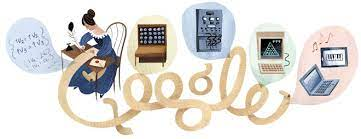

💻 Além de ser conhecida como a primeira programadora do mundo, Ada também é lembrada por ser filha de Lord Byron. Não que o pai tenha sido um grande exemplo para Ada: na verdade, quem a criou foi sua mãe, a também matemática Anne Isabella Milbanke.
💻 O casamento de Byron e Anne foi breve e marcado pelas traições do poeta, que havia se casado com a matemática porque estava endividado, e a família dela era rica.
💻 Cinco semanas depois do nascimento de Ada, Anne não pôde mais suportar os casos do marido e o abandonou. Ela então cuidou da educação da filha, despertando na mais nova o interesse pela matemática.
💻 Ada era obcecada com a ideia de criar mecanismos que voassem. Por isso, escreveu e ilustrou Flyology, um livro com suas ideias mais criativas de como alcançar esse objetivo.
💻 Casou-se, aos 20 anos com William Lord King. King foi nomeado Conde de Lovelace em 1838, e Ada tornou-se Lady Lovelace. Ada morreu de câncer de útero, aos 36 anos de idade
💻 Ada foi apresentada a Charles Babbage por sua tutora Mary Somerville, Babbage era professor de matemática em Cambridge, conhecido como inventor das maquinas diferenciais.
💻 Entre 1842 e 1843, ela traduziu um artigo italiano sobre o motor e complementou o estudo com um conjunto de observações de sua autoria. Essas notas, que acabaram sendo mais extensas do que o artigo original, continham um algoritmo criado para ser processado por máquinas, sendo considerado o primeiro programa de computador já criado.
💻 As notas de Lovelace a respeito da máquina analítica de Babbage foram republicadas em 1953, quase cem anos após sua morte. Essa máquina foi reconhecida como o primeiro modelo de computador já construído, e as notas da matemática ficaram marcadas como a primeira descrição de um computador e de um software.
💻 Ada não foi reconhecida durante seu tempo de vida. Seu reconhecimento como pioneira da computação só surgiu após Alan Turing ter feito referência a seu trabalho.
💻 Na década de 70 o departamento de defesa norte-americano criou uma linguagem de programação chamada Ada, em homenagem a Ada Lovelace, a linguagem originada de pascal era usada em missões criticas, como por exemplo, em softwares de aviação
💻 O Google também homenageou a encantadora dos números, como era chamada carinhosamente por Babbage, criando um doodle, uma personalização da pagina inicial do buscador, em comemoração aos 197 da condessa de Lovelace
